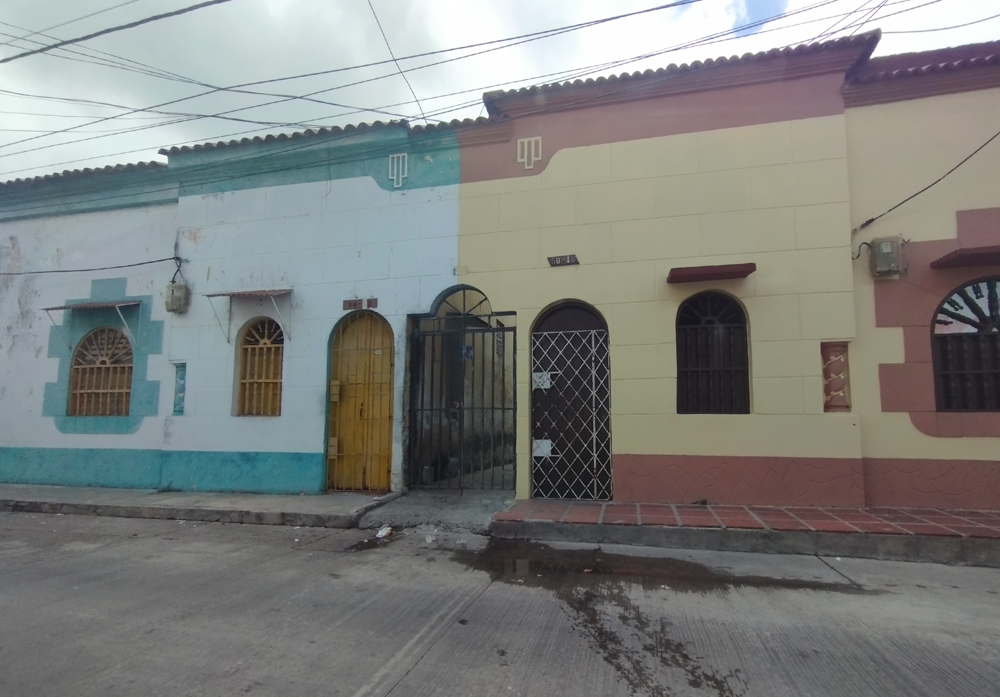

EL PASAJE


Esta edificación tiene una arquitectura ecléctica, pues toma elementos de varios estilos de diseño. Las ventanas de madera son características del estilo colonial, cuentan con un detalle de arco de medio punto y tejas de arcilla en antepecho. Por otra parte, del estilo Art–Decó se utiliza la ornamentación de figuras geométricas y parasoles en concreto, mientras que del estilo Barroco usa las columnas salomónicas.
El acceso de la estación del Tranvía tiene puertas de madera, en la parte alta posee rejillas en madera para ventilar, tiene en sus puertas vidrio para la iluminación. Las puertas están flanqueadas por elementos propios del periodo republicano como almohadillados de mortero, mientras que en la parte superior cuenta con un parasol compuesto de estructura metálica y techo de zinc, propio de la arquitectura antillana.
Las manos que atizan los fogones y dan palote a las ollas, son de las mujeres y los hombres que por años han decidido rendir homenaje a su herencia culinaria. Son las vidas de familias que llegaron al barrio y desde entonces no han dejado de transformar los alimentos para cocinar singulares preparaciones, de aromas, colores y sabores que evocan, principalmente, lo afro en Barrio Abajo.
En este conjunto de inmuebles se realizaba una especie de bazar, llamado "El Songo Zorongo", en la que todos los habitantes del sector aledaño a este, se reunían a beber, bailar y organizar partidas de juegos populares del barrio como lo es "La Chequita" o juegos como el dominó. Por otro lado, fue cuna de personajes notables para el sector, entre los cuales se destaca al pintor galardonado, Efraín Cortes.
Es un elemento arquitectónico que tiene el fuste en forma helicoidal y con una guirnalda de forma fitomorfa que la rodea transversalmente, fue comúnmente utilizada en Europa y América en el periodo barroco.
Ventana en madera con bolillos en forma de balaustres, su forma superior es de arco de medio punto y alrededor tiene una simulación de piedras de sillares.
HOLAAA MUNDO .